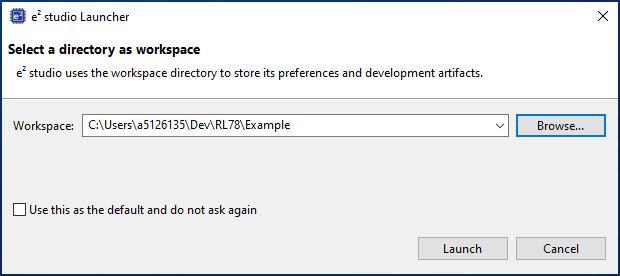
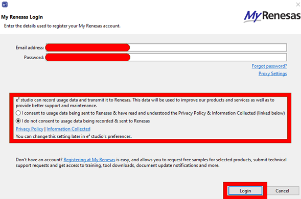
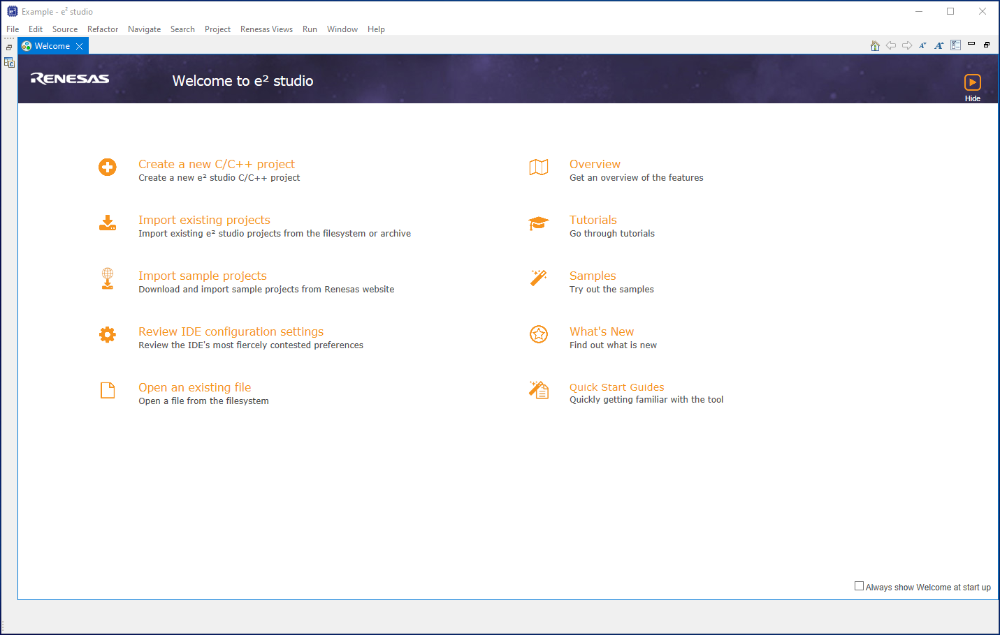

Here we will guide you through opening e2studio and creating a workspace.
Firstly start e2studio either via the start menu, shortcut or manually using the executable in the install location.
After some initial loading the workspace dialog will appear. This dialog can be used to select an existing workspace or new one.
A workspace is a project staging area, much like the solution area of visual studio.
It contains one or multiple projects. These projects can simply reference other projects within the workspace using workspace relative paths,
the workspace folder also contains some meta-data
specific to e2studio and this is version dependent.
Typically a shorter path length to your workspace is a good idea - the image below shows an example workspace path.
By selecting browse, you can browse to the appropriate location and also create a new folder to house your workspace.

Finally click launch when you are happy with your workspace location.
When starting e2studio for the first time you may be prompted to register the installed toolchains.
Please ensure you select all toolchains available and register them - this allows e2studio to use these toolchains
in any projects moving forward. The image below shows the selections to be made in the toolcahin registration dialog.

Specifically those selections are:
e2studio may prompt to provide MyRenesas login credentials - this will faciltate acquiring extra-tools/plugins/update later.
As shown in the image below, proivde your login credentials, decide whether you would like Renesas to collect usage data to improve our products and services and login.

Finally you will be presented with the welcome page.
